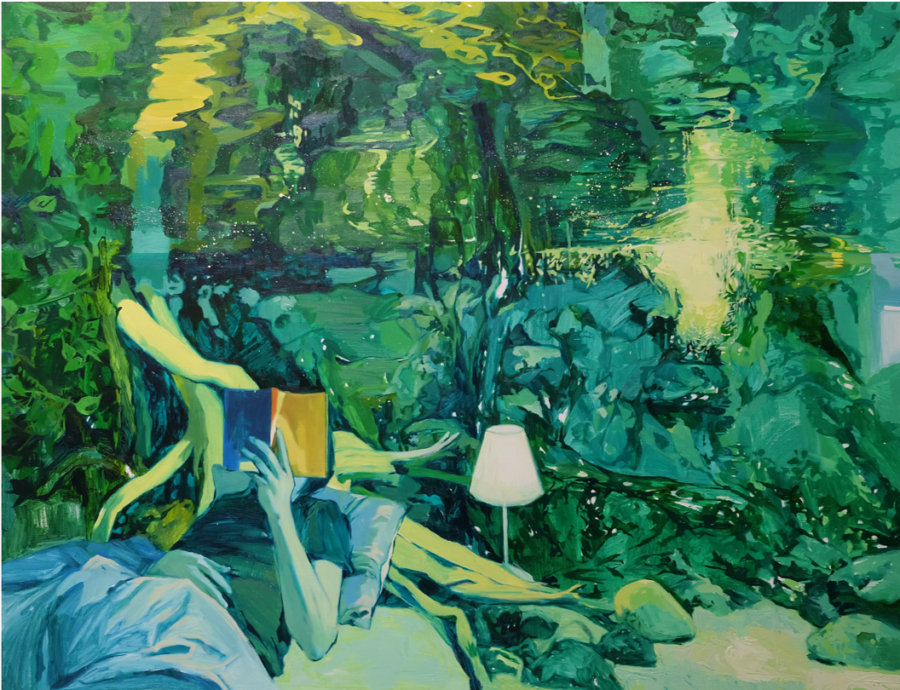

ABOUT fish tank
형형색색 다채로운 ‘수족관’들은 우리들의 삶과 닮아있다.
자연 그대로의 것들보다는 인위적으로 조성된 환경 속에 속하는 우리들의 삶처럼, 필요 기능에 따라 혹은 미적 취향을 목적으로 꾸며져 있는 수조는 나름의 세상을 구축하고 있다.
그 세상이 전부인 물고기들이 유유히 헤엄치는 모습에서 우리가 삶의 모양새를 꾸리고 살아내어가는 것과 비슷하게 느껴지는 심리적 동질감을 자극받게 된다.
목격된 ‘살아내어가는 삶’이라는 심리적인 공간을 수조(Fish Tank)로 은유한 <수족관 시리즈>는 각자 주어진 삶이라는 형태로 꾸며진 수조 속에서 잠식된 대상들을 병치시켜 보여준다.
일상의 형상을 한 다양한 대상들은 반사되는 물 표면에서 일그러지고 흐트러진다. 어지럽게 부유하는 대상들은 서로 뒤엉켜 꼬여지고 비틀어지면서 형상의 전복이 생기게 된다.
이때의 전복은 ‘일상’속에 여러 개의 삶 형상들이 반사되는 수조의 수면에서 물감이라는 회화적 물성으로 감각되어 진다.
대상의 재현적 요소와 반사되는 추상적 요소를 대립하는 구도는 목격된 것들에 대한 실재 이미지와 주관적이고 감각적인 이미지들의 혼성으로 표현되어 ‘삶’과 ‘사는 것’에 관한 혼돈,욕망,긍정,아름다움을 전달하고자 한다.
비가시적인 삶을 가시적인 수족관으로 상징됨으로써 크든 작든, 화려하든 초라하든 삶을 품고 살아가는것들의 작은 유영을 마주할 수 있는 시각적 매개제가 되고자 한다.